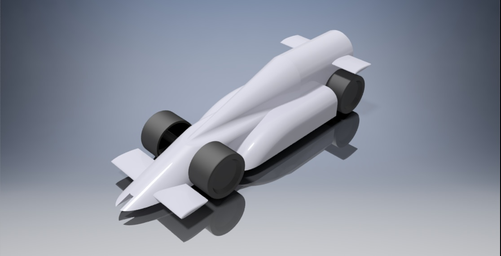

Education
- O Level's - St. Paul's English High School (2011-2022)
- A Level's - Cedar College (2022-2024)
- BSCS - FAST NUCES (2024-2028)
Hi! I'm Shaheer, a student of cybersecurity and a computer enthusiast. I love learning about new technologies and solving problems.
In ten years, I see myself leading cybersecurity initiatives for a global organization, working to make the internet safer for everyone. I aspire to continuously grow in my career while contributing to meaningful projects.
One of my greatest inspirations is Alan Turing, whose pioneering work in computing and cryptography laid the foundation for modern technology. His dedication and brilliance motivate me to pursue a career in cybersecurity.
F1 in Schools Experience Collaborated with NUST and Cedar College to prepare for the F1 in Schools World Finals 2023 in Abu Dhabi. Contributed to the design and development of a Formula 1 model car, enhancing skills in engineering, teamwork, and project management. Despite visa challenges preventing attendance, gained valuable experience in leadership and collaboration
